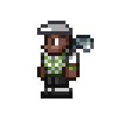

-El golfista
El golfista es un NPC del modo normal que vende cosas relacionadas al golf. A medida que se consigan más puntos en el golf, vende más objetos.
Este aparece de forma natural en el desierto subterráneo teniendo que ser salvado.
Ataca a los monstruos cercanos con pelotas de golf.
Este puede detectado por el analizador de formas de vida.
El golfista |
 |
Estadisticas |
Tipo |
NPC |
Salud |
250 |
Defensa |
15 |
Especialidad |
Vender cosas relacionadas al golf
|
Bestiario |
Descripcion |
.
El golfista es un hombre sabio de mediana edad que vende todo tipo de equipo de golf. Juega muy bien y sabe cómo apuntar.
|
Bioma preferido |
El bosque |
IDs internas |
ID de NPC |
588 |
ID de bestiario |
13 |
Frases
Interacción
- "No soy de esos que gritan y se vuelven locos por algo tan minimo como que mi bola caiga en el agua. Yo mantengo la calma y la tranquilidad y me centro en el siguiente tiro."
- "¿Eh? ¿Que desayunas qué?"
- "Mejor un birdie en mano que ciento volando."
- "Chúpate el dedo, levántalo y examina el viento. Las bolas de golf pesan poco y hasta la más pequeña brisa puede cambiar su trayectoria."
- "Si la arena te produce pesadillas, haz de tu wedge tu atrapasueños."
- "¿Golpear más alto, llegar más lejos o despejar? Todo depende del palo que uses. ¡Elige con cuidado!"
- "Cuando te hablo sobre dar un palo no me refiere a ir a robar, me refiero a cosas como que me des uno del cinco."
- "En este juego, solo los perdedores van a por la puntuación más alta."
- "Los jardineros se llevan muchos verdes poniendo los verdes para los golfistas, ¡je, je!"
- "Si caes en la hierba ¡usa el putter! No permitas que tus bolas salgan volando cuando estás tan cerca."
- "No te la juegues con las zonas acuáticas. Intenta mantenerte en las calles y en las zonas de hierba habituales."
- Cuando el traficante de armas está presente
- (Nombre del Traficante de armas) ha confundido mis pelotas de golf como munición con su mosquete en varias ocasiones.
- Cuando la dríada está presente
- "Según <nombre de la dríada>, me estoy cargando a muchos de sus amigos cuando corto el césped. ¡Qué le voy a hacer, si tengo que hacer calles para mi campo!"
- Cuando el pescador está presente
- "¿Debería dedicarme a pescar? ¡Con tanto soborno a <nombre del pescador> para que me recupere las bolas del agua, me estoy quedando sin blanca!"
- Durante día ventoso
- "El viento dificulta el circuito."
- "Los vientos fuertes suelen molar porque añaden dificultad al juego, pero esto ya es pasarse."
- Durante lluvia
- "Jugar al golf bajo la lluvia no es demasiado divertido. ¡Se resbala un montón!"
- "¡Las zonas de aguas se expanden con la lluvia y hacen que sea mucho más difícil llegar al green!"
- "¡¿Jugar al golf con este tiempo?! ¡Solo si te apatece practicar tu swing en un pararrayos gigante!"
- Durante una tormenta
- "No lo creo, <nombre de jugador>."
- "Las posibilidades de que te caiga un rayo son las mismas que de ganar la lotería. ¡Pero salir a practicar el swing con un palo de hierro es un boleto ganador!"
- Al estar en un cementerio
- "Los cementerios me dan escalofríos. No me gusta practicar mis swings encima de mi familia y amigos."
- "No me gusta jugar al golf en el cementerio. La hierba crece demasiado y dificulta todo el circuito."
- Durante luna de sangre
- "Ah, ¿las manchas de sangre de mi palo? ¿¡No has visto los zombis que hay ahí fuera!?"
- "¡No sé qué da más miedo, la Luna de Sangre en sí o cómo afecta a mi hermana!"
Felicidad
- Cuando hay demasiada gente
- "No me gusta tener que decir esto, pero aborrezco el ajetreo de aquí."
- Cuando está cerca del pescador
- "Opinión impopular: me encanta tener a <nombre del pescador> cerca. ¡Puedo recuperar los obstáculos de agua!"
- Cuando está cerca del pintor
- "Siempre es divertido pasar tiempo con <nombre del pintor>. Es buena gente"
- Cuando está cerca de la zoóloga
- "Siempre es divertido pasar el rato con <nombre de la zoóloga>. Es buena gente"
- Cuando está cerca del pirata
- "No me gusta tener cerca a <nombre del pirata>. Me hace sentir incómodo."
- Cuando está cerca del mercader
- "Odio la avaricia de <nombre del mercader>. Es bastante innecesaria en un mundo como este."
- Cuando está cerca de la princesa
- "Traté de enseñarle a <nombre de la princesa> trucos de golf, ¡pero ella me enseñó a mí! Me gusta"
Golf
- Cuando el puntaje de golf es debajo de 500
- "Si siguen haciendo así el swing, acabarás haciéndole daño a alguien... ¡o a ti mismo!"
- "Vas a tener que practicar mucho. Te recomiendo fervientemente algo alcolchado."
- "Pobre pájaro... Pero bueno, el pató esta muy rico. En fin, eso, ¡que no te rindas!"
Tienda
| Objeto |
Precio |
Disponibilidad |
| Palo de golf gastado (Hierro) |
10  |
Siempre disponible |
| Palo de golf gastado (Driver) |
10 |
Siempre disponible |
| Palo de golf gastado (Wedge) |
10 |
Siempre disponible |
| Palo de golf gastado (Putter) |
10 |
Siempre disponible |
| Banderín blanco |
20 |
Siempre disponible |
| Banderín rojo |
20 |
Siempre disponible |
| Banderín verde |
20 |
Siempre disponible |
| Banderín azul |
20 |
Siempre disponible |
| Banderín amarillo |
20 |
Siempre disponible |
| Banderín morado |
20 |
Siempre disponible |
| Camiseta de golf |
1  |
Siempre disponible |
| Pelota de golf |
1 |
Siempre disponible |
| Silbato de golf |
10 |
Siempre disponible |
| Copa de golf |
1 |
Siempre disponible |
| Cartel de flecha |
20 |
Siempre disponible |
| Cartel de flecha pintado |
20 |
Siempre disponible |
| Gorra de club de campo |
2 50 |
Siempre disponible |
| Visera de club de campo |
2 50 |
Siempre disponible |
| Chaleco de club de campo |
2 50 |
Siempre disponible |
| Pantalones de club de campo |
2 50 |
Siempre disponible |
| Cortacésped |
1 |
Siempre disponible |
Curiosidades
- La mayoría de los nombres del golfista están basados en jugadores de la vida real:
- Lion Pines: Tiger Woods
- Arnie Palmfrond: Arnold Palmer
- Jake Nicklelisp: Jack Nicklaus
- Gunner McLovin: Rory McIlroy y Shooter McGavin
- El nombre Harry Madison, podría ser una referencia a la casa productora Happy Madison fundada por Adam Sandler, la cual es representada por un hombre golpeando la pantalla con una bola de golf.
- Si el jugador tiene 2000 puntos de golf o más, el golfista vende un total de 39 objetos. Si se cumplen las condiciones, es posible que venda una torre lo que hace un total de 40 objetos. Es, junto al tabernero, el NPC que más objetos vende.
- Según Redigit, el golfista es el hermano mayor de la zoóloga.
volver al inicio
volver a la pagina NPC